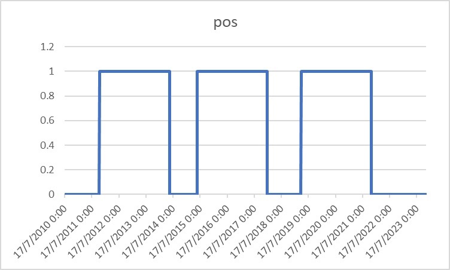

我2017年買第一顆比特幣，2019年開始在媒體公開提及我看好比特幣，直至現在。最提倡的方法當然是量化交易、程式交易，在眾多方法中，回報最高，Sharpe也最高。若什麼也不懂，那就DCA吧。早兩篇專欄有提及，自2019年開始，任何時候開始DCA比特幣也是盈利的！
程式交易及DCA已被我提及一千次，奈何，每天仍收到網友inbox問「現時可以買比特幣嗎？」、「是否等比特幣回調才買嗎？」、「比特幣明天會升嗎？」…
為什麼我一向都不提供tips，而是寧願教育大家，就是因為，tips不是一勞永逸，你今天問完，明天也要繼續問，下周也要再問。但你學會方法後，一勞永逸。你學懂程式交易後，可以以後不用再來找我；你學懂DCA後，同樣可以不用再來找我。
程式交易屬最高頻的方法，DCA屬最低頻，兩者之間還有其他方法嗎？沒多少，充其量可以因應halving去訂立一個有趣策略。
老實說，halving是看好比特幣的一個很重要的因子。不少人嘗試用不同方法去time比特幣的牛熊週期，包括我舊文章的3-4個方法，也有人看熊市底部到牛市頂部的上升幅度，也有人看減半後到牛市頂部的上升幅度，也有人看上個牛市頂部到下個牛市頂度的上升幅度等等。問題是，用不同方法計算出來的目標價都截然不同，沒有把答案收斂。
不過，回看我2021年頭《量化預測Bitcoin價格》的文章，當中提到：
「那何時見頂？對上兩次Halving到見頂分別為12及18個月，因此我設計了3個scenarios，分別是12、15(平均)及18個月見頂，即2021年5月、8月及11月。」
回看歷史數據，的而且確，2021年5月為第一個頂，65k usd；而2021年11月為第二個頂，69k usd。可見，以時間作預測比起用幅度作預測準確得多。
那我們就可以backtest一下，到底於reward halving前多久該開始買比特幣，然後於reward halving後多久該賣掉比特幣。
1st halving: 2012/11/28
2nd halving: 2016/7/9
3rd halving: 2020/5/11
Backtest做法得簡單，優化的目標為看看哪個參數的Sharpe最高。優化結果顯示，於halving前400天開始持有比特幣，然後於halving後的550天賣掉比特幣，整個equity curve的sharpe是最好的。
Sharpe為1.7以上，年回報為197%！
倉位圖如下：

3次halving的equity curve如下：

總體equity curve如下：
下次halving預計為2024年4月19日，400天前，即2023年3月16日，即24000 usd。以現價看，已經+58%。別說我沒提大家，FTX事件發生後，已經說是大減價時刻。我更在不同外國媒體上指我看好加密貨幣，震驚海外十多個媒體。
那halving的550天後呢，是哪天？是2025年10月21日。
等等！先別急於買入或加倉比特幣。回報好之餘，也要看看風險。
以下為Drawdown圖：
會發現，以arithmetic的方法算，中途drawdown可以高達40-90%！第二次halving的波幅算很穩定，平均只有40% drawdown，不過第一及第三次halving的前後回報則很不穩定。
Drawdown如此大，即持倉不能以槓桿進行，即須以現貨看好比特幣。而且，不要看到比特幣回調40%就跑來找我。想像一下，什麼是40%回調呢？
例如比特幣現時上升到50k usd，再跌回30k usd；又或者升到60k usd，再跌回36k usd；又或者升到70k usd，再跌回42k usd等等。一定要明白，這是很正常的，如果接受不了，你就把錢拿回去做銀行定存好了。
買多少呢？上幾篇專欄寫了，請翻看。
希望大家喜歡以上內容。若喜歡，請給like，謝謝。